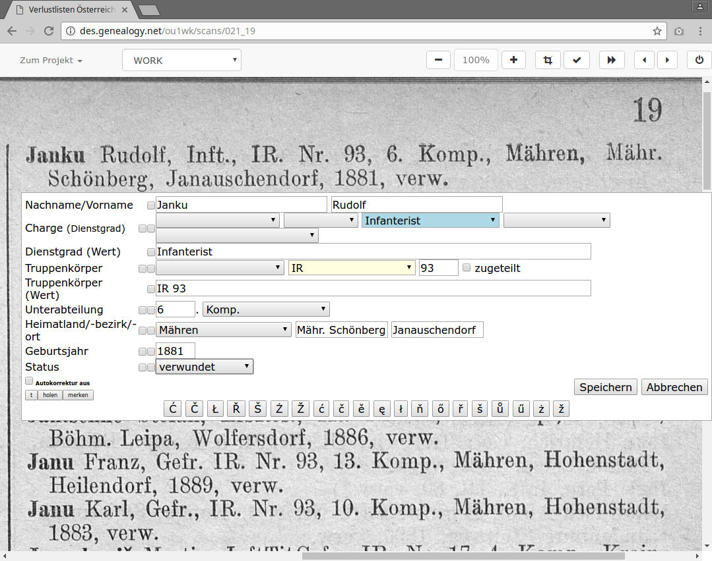
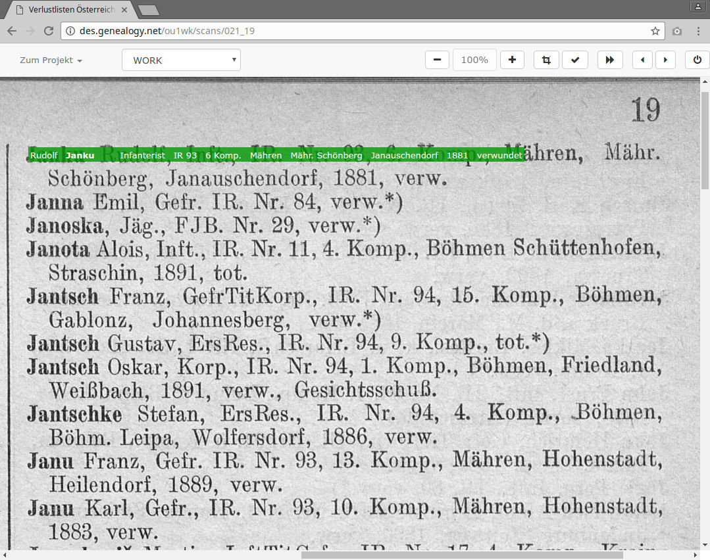

Austrian-Hungarian Casualty Lists in DES
Your first three entries
Jesper Zedlitz (CompGen)
After navigating to
http://des.genealogy.net/wk1ou/start/edit
and logging in you will see a screen similar to this one...

The scan appears. We position the mouse pointer in the upper left corner of the first entry...

and boldly click the left mouse button.

The input mask opens up.
Don't worry if it looks a bit confusing on first sight. We will work it out bit by bit.

Just start typing, beginning with the surname. All characters can be entered lower case, the program will automatically take care of the casing.

Use the Tab key to move to the next field and enter the first name. Now we enter the rank (“Dienstgrad”). To do this, press the Tab key 3 times and you'll reach the blue field.

Press the 'I' key and “Infanterist” is entered. “IR” denotes the unit (“Truppenkörper”). Pressing the Tab key 4 times takes us to the yellow input field.

Again, one 'I' key is enough. We gradually work through all input fields in the same manner. Now click on “Speichern” (save) or press Tab and Enter after the status field.

Congratulation, the first record is saved!
The green bar indicates that this entry has been entered.
The second and third entry
After this archievement we'll to continue with the second and third entry.
We will also be familiarized with a convenience function and a key combination of the DES.

Now comes the second entry. Again, click on the upper left corner of the entry.

The input mask opens again. Since our last entry was a double line, the capture window opens somewhat too far down. This doesn't matter.

We fill the entry as usual. Before saving, however, wait briefly...

... and toggle the checkbox in front of “verwundet” (“wounded”). This is a convenience function of the DES. It ensures that the value “verwundet” is kept for the next entry. Now save the entry.

This is the input mask for the third entry. As promised the status “verwundet” was kept.

We enter the (few) data of the third entry. “FJ” is already sufficient for the unit. After entering 29 we can press Alt+s to save the entry. A click on “Speichern” is also possible.

By this the third entry is already finished!
That wasn't so hard, right?
Have fun with editing with the DES.
If you have questions the project supervisors will be glad to help. There is also a mailing list to ask questions: